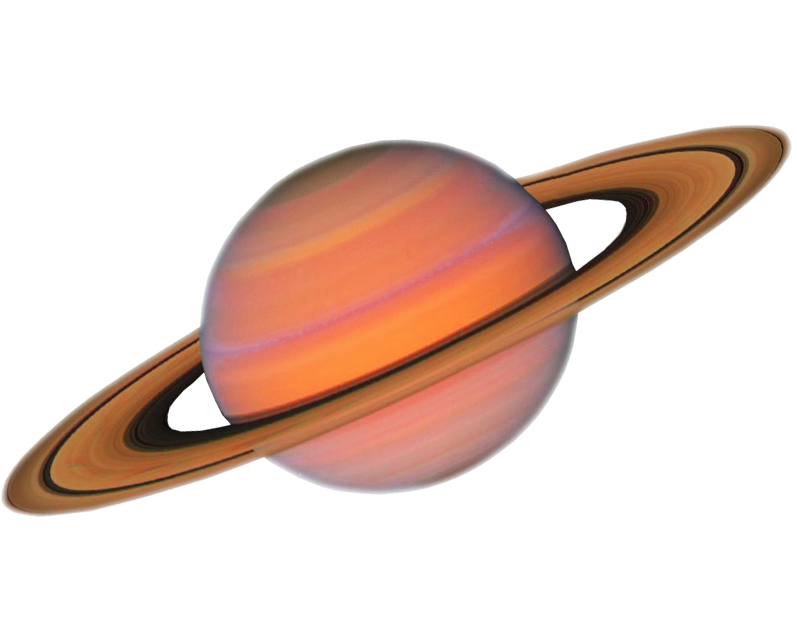

| Pictures of Planets: |  |  |
||
| Mercury | Saturn | Neptune | Jupiter | |
|---|---|---|---|---|
| Mass(Kg) | 3.3 x 1023 | 5.69 x 1026 | 1.02 x 1026 | 1.90 x 1027 |
| Diameter(Km) | 4,879.4 km | 120,660 km | 49,528 km | 142,800 km |
| Mean Density(Kg/m) | 54203 | 6903 | 1,6403 | 13143 |
| Escape Velocity | 59,500 m/s | 23,300 m/s | 5,000 m/s | 35,600 m/s |
| Average Dist from Sun (AU) | 0.387 | 9.537 | 30.07 | 5.203 |
| Rotation Period (Earth Days) | 58.65 | 0.44 | 0.67 | 0.41 |
| Revolution Period (Earth Years) | 87.97 | 29.46 | 164.8 | 11.86 |